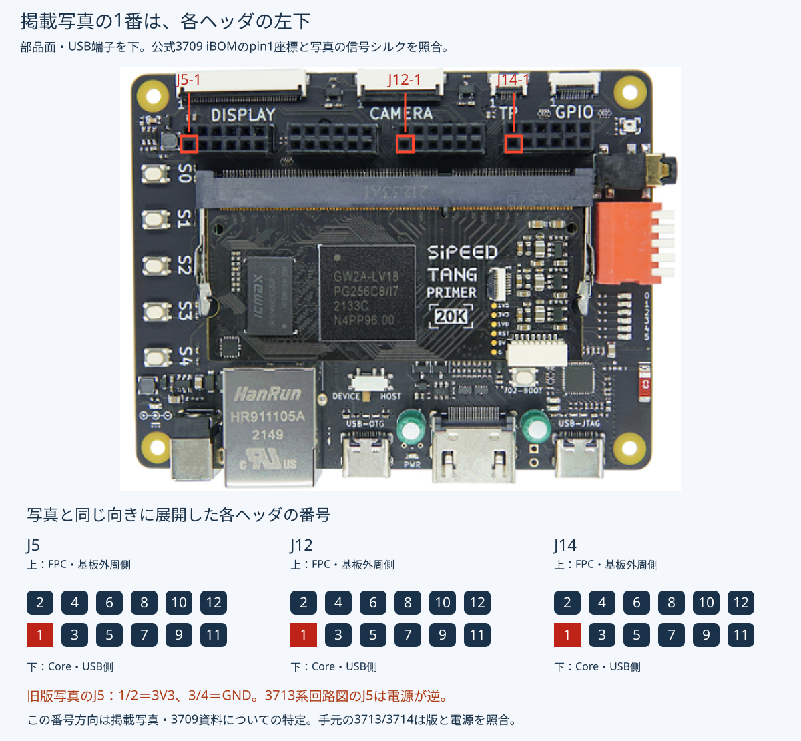
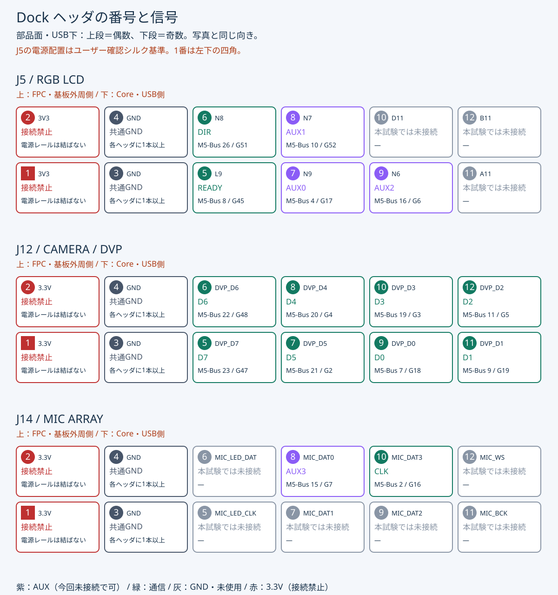
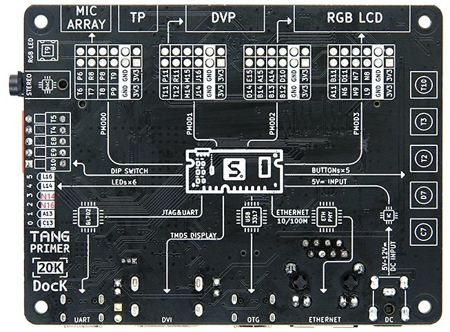

← キャリア基板ドキュメント基板上の場所からたどる
Dockジャンパ配線ガイド
Tab5のM5-Busと、Coreを装着した公式Tang Primer 20K Dockを接続します。LINK／GFX v0は信号11本＋共通GND。AUX0〜3は未接続で構いません。
配線案・実機未検証Dock写真はヘッダ位置の目印です。掲載写真の1番方向は旧版3709配置データで特定しました。現行版との電源割当の違いは下の「写真上の1番ピン」を参照してください。実物のシルクと回路図を照合し、Dock単体で電源・GNDを測定してから配線してください。このページはユーザー確認のJ5シルクに合わせ、J5の1/2を3.3V、3/4をGNDと表示しています。
写真上の1番ピンを特定
公式の旧版3709基板配置データでは、J5・J12・J14のpin1はそれぞれ左下です。掲載写真と同じ部品面・USB下の向きで、上段は2・4・6・8・10・12、下段は1・3・5・7・9・11と並びます。
番号付き写真SVGを開く
掲載の旧版写真はJ5も左端列が3V3、次がGNDです。一方、3713系回路図のJ5は1/2=GND、3/4=3.3V。以下の図・GND接続先はユーザーが確認したシルクに合わせています。版が異なる基板は電源配置を個別に照合してください。
根拠：Sipeed公式配置データのTang_Primer_20K_Dock_3709_ibom.html。pin1フラグ付き四角パッドが各ヘッダの左下。背面写真の信号順も照合しました。手元のJ5の信号・電源の並びはユーザーがシルクで確認済みです。基板の版と電圧実測は未確認です。
Dockヘッダのピン配置模式図
J5・J12・J14の全12ピンを番号付きで示します。部品面・USB下で上段が偶数、下段が奇数。番号の横はDockの信号名（J5は実物シルクのFPGA ball名）、下は今回の用途とTab5の接続先です。1番ピンは四角で強調しています。
写真と同じ向きの模式図です。J5はユーザー確認シルク（上段：3V3/GND/N8/N7/D11/B11、下段：3V3/GND/L9/N9/N6/A11）を基準にしています。J12/J14は公式旧版配置資料に基づき、手元の実物確認は未完了です。
ピン配置SVGを原寸で開く・保存する
公式裏面写真と回路図の差異（配線前に確認）
公式裏面写真ではRGB LCDのR0〜G2に対応するヘッダの電源端子が、端から3.3V、GNDの順に見えます。一方、保存済み回路図ではJ5の1/2がGND、3/4が3.3Vです。写真と回路図の版の対応は未確定です。旧版配置資料では写真上の1番は左下です。写真だけから番号を割り当てず、実物の版・導通・電圧を照合してください。

裏面写真は部品面と左右が反転します。資料名がDock_3714_Schematics.pdfでも、今回確認したPDF内の図枠はDock_3713、Rev 1.1、2023-09-12です。
接続する順序
- Dockの版（3713／3714）と各ヘッダの電源・GNDを測定。カメラ、RGB LCD、マイク、タッチを外します。
- SW0をOFFにして、Tab5の対象GPIOが入力であることを確認。両ボードへ個別に給電し、共通GNDと信号を接続します。
- 各信号へ220〜330Ωを挿入。線長15cm以下、データ線2本ごとにGNDを併走します。電源レール同士は結びません。
- LINK／GFXを書き込み、SW0 OFFのままKey_0でリセット。両側の電源とTab5の入力状態を再確認してSW0をON、ホスト側arm操作へ進みます。
抵抗はIoff分離の代替ではありません。片側の電源を切る前に信号線を外してください。
全信号の照合表
GND：M5-Bus 1／3／5 → J12-3/4、J14-3/4、J5-3/4（3本以上、各ヘッダに1本）。
未接続：M5-Bus 12、25、27、28、29、30、およびDockの3.3V。AUXは今回不使用です。
資料と確認範囲
2026-10-28：既存仕様の図解化。GPIO・電源・コマンドの変更なし、全ホスト共通の配線。ホスト側への仕様同期は不要。詳細な参照版は生成記録を参照。
生成：tools/build_dock_wiring.py / 写真の基板と手元の版は必ず照合してください。